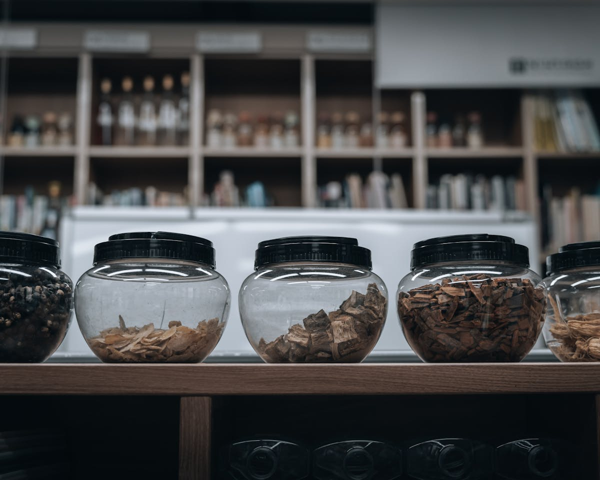
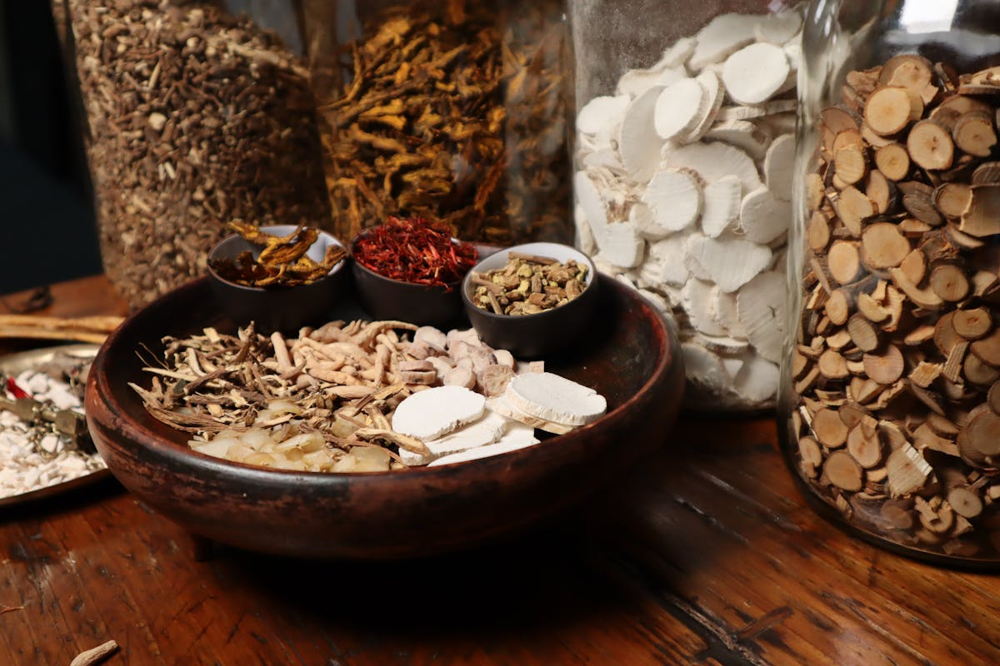
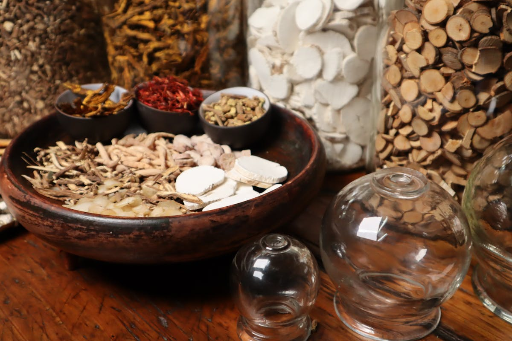
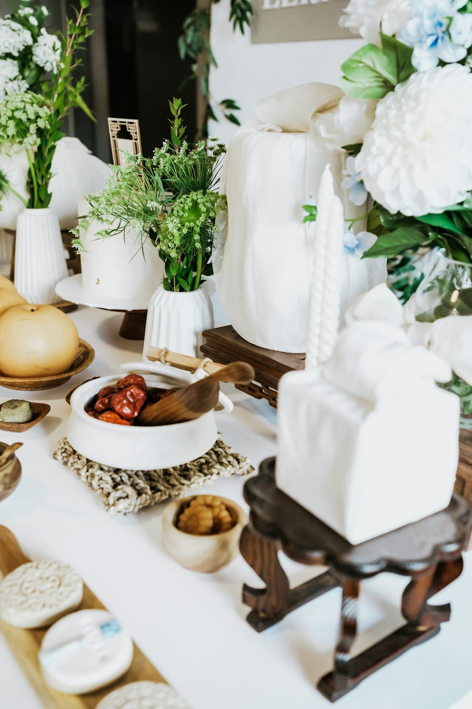
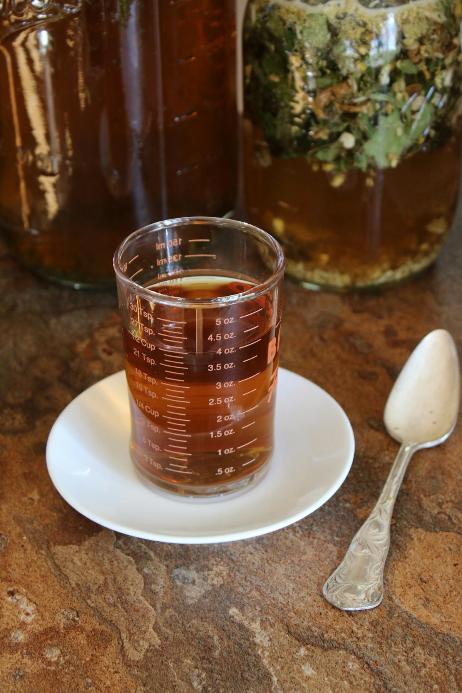
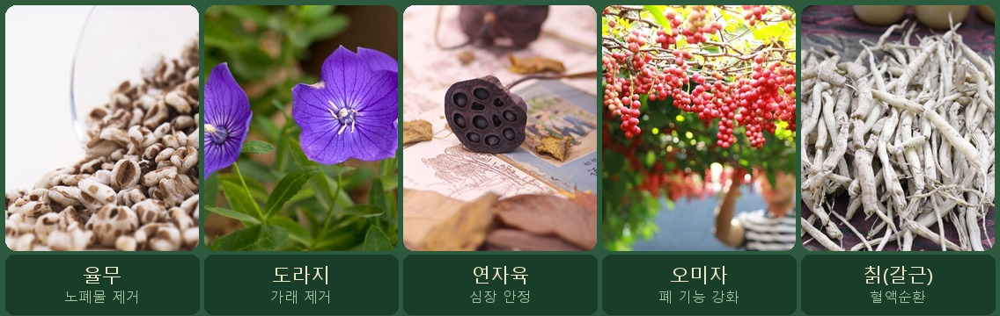

사상체질 중 한국인에게 가장 많은 체질이 바로 태음인입니다. 전체 인구의 약 40~50%가 태음인으로 분류될 만큼 흔한 체질이지만, 정작 "내가 태음인인지" 정확히 아는 분은 많지 않아요.
오늘은 한의원에 가지 않아도 스스로 확인할 수 있는 태음인 자가진단 체크리스트 20가지를 정리했습니다.

태음인이란? (30초 요약)
사상의학은 조선 말기 이제마 선생이 창시한 한의학 이론으로, 사람의 체질을 태양·태음·소양·소음 네 가지로 나눕니다.
태음인의 핵심 키워드는 "저장과 축적"입니다. 몸 안에 에너지와 물질을 쌓아두는 경향이 강해서, 체격이 크고 살이 잘 찌는 반면 한번 건강이 무너지면 회복이 더딘 편이에요.

태음인 자가진단 체크리스트
아래 20가지 항목을 읽고, 해당하는 항목에 체크해보세요.
🏃 신체·외모
💭 성격·기질
🍚 음식·소화
💪 건강·체력

결과 확인
거의 확실하게 태음인 체질입니다. 한의원 방문 시 "태음인 체질로 진료받고 싶다"고 말씀하시면 더 정확한 진단을 받을 수 있어요.
태음인 성향이 강하지만, 일부 소양인·소음인 특성이 섞여 있을 수 있습니다. 전문 한의사 진단으로 확인해보시길 추천합니다.
태음인보다는 소양인이나 소음인일 가능성이 높습니다.

태음인의 건강 약점과 관리 포인트
태음인은 체력과 지구력이 좋은 반면, 호흡기와 피부가 가장 취약한 부위입니다.
잘 걸리는 질환
고혈압·고지혈증·비만, 기관지염·폐 관련 질환·천식, 아토피·두드러기 등 피부 질환, 변비
특히 주의해야 할 생활 습관
과식과 폭식을 반드시 피해야 합니다. 땀을 규칙적으로 흘리는 운동이 매우 중요하며, 적극적인 사회 활동도 건강에 도움이 됩니다.

태음인에게 맞는 한약
| 처방명 | 주요 효능 | 적합한 증상 |
|---|---|---|
| 태음조위탕 | 소화·순환 개선 | 비만, 과식, 피로 |
| 열다한소탕 | 호흡기 강화 | 기침, 가래, 기관지 약화 |
| 청폐사간탕 | 폐열 해소 | 피부 트러블, 열감 |
| 조위승청탕 | 위장 조절 | 변비, 소화불량 |
태음인에게 좋은 한약재

태음인이 먹으면 좋은 음식 vs 피해야 할 음식
✅ 잘 맞는 음식
콩류(두부·된장·청국장), 율무, 견과류, 소고기, 배, 밤, 은행, 잣, 무, 도라지, 연근, 미역, 다시마
❌ 피하면 좋은 음식
닭고기(과다 섭취), 인삼(열이 많은 태음인에게 부작용 가능), 자극적이고 기름진 음식, 밀가루 과다 섭취
태음인 다이어트, 한방으로 접근하는 법
태음인은 사상체질 중 비만이 가장 많은 체질입니다. 체질적으로 에너지를 저장하는 성질이 강하기 때문이에요.
첫째, 땀을 내는 운동이 필수입니다. 걷기·수영·자전거 등 유산소 운동을 꾸준히 하면서 땀을 내는 것이 가장 중요합니다.
둘째, 폭식·과식 차단입니다. 태음조위탕 계열 한약은 과식 충동을 줄이고 포만감을 높이는 데 도움이 돼요.
자주 묻는 질문
Among the four constitutional types in Korean traditional medicine, Taeeum-in is the most common — accounting for roughly 40–50% of the Korean population. Despite this, many people don't know whether they actually belong to this type.
This guide walks you through 20 self-diagnosis items you can check without visiting a clinic. Based on your score, we'll also recommend herbal remedies and foods to embrace or avoid.
What Is Taeeum-in? (30-Second Overview)
Sasang Constitutional Medicine was founded by the 19th-century Korean scholar Yi Je-ma. It classifies people into four types: Taeyang, Taeeum, Soyang, and Soeum.
The defining characteristic of Taeeum-in is "storage and accumulation." This type tends to store energy in the body, resulting in a larger frame and a tendency to gain weight. Once health deteriorates, however, recovery can be slow.
Taeeum-in Self-Diagnosis Checklist
Check every item that applies to you.
🏃 Body & Appearance
💭 Personality & Temperament
🍚 Diet & Digestion
💪 Health & Stamina
Your Results
You almost certainly fall into the Taeeum-in type. When visiting a clinic, ask for a "Taeeum-in constitutional diagnosis" for more precise guidance.
You show strong Taeeum-in traits, but may have some overlap with Soyang-in or Soeum-in. A professional practitioner can give you a definitive diagnosis.
You're more likely Soyang-in or Soeum-in. Check the other constitutional type checklists.
Taeeum-in Health Weaknesses & Management
Taeeum-in types are physically strong, but their biggest vulnerabilities are the respiratory system and skin.
Common Conditions
High blood pressure, hyperlipidemia, obesity, bronchitis, asthma, atopic dermatitis, hives, constipation.
Key Lifestyle Advice
Avoid overeating. Dietary discipline is essential. Regular sweat-producing exercise (walking, swimming, cycling) is critical. Staying socially active also supports overall vitality.
Recommended Herbal Formulas for Taeeum-in
| Formula | Primary Effect | Best For |
|---|---|---|
| Taeeum-jowi-tang (太陰調胃湯) | Digestion & circulation | Obesity, overeating, fatigue |
| Yeolda-hanso-tang (熱多寒少湯) | Respiratory strengthening | Cough, phlegm, weak bronchi |
| Cheongpye-sagan-tang (淸肺瀉肝湯) | Clears lung heat | Skin flare-ups, heat sensation |
| Jowi-seungcheong-tang (調胃升淸湯) | Regulates the stomach | Constipation, indigestion |
Key Herbs for Taeeum-in
Best & Worst Foods for Taeeum-in
✅ Beneficial Foods
Soy products (tofu, doenjang), adlay, nuts, beef, pear, chestnut, ginkgo nut, pine nut, radish, bellflower root, lotus root, seaweed, kelp
❌ Foods to Limit
Excessive chicken, ginseng (may cause side effects in heat-prone types), spicy or greasy foods, excessive wheat/flour products
Taeeum-in Weight Management: A Korean Medicine Approach
Taeeum-in types have the highest obesity rate — not due to laziness, but because their bodies are constitutionally programmed to store energy.
First, sweat-producing exercise is non-negotiable. Walking, swimming, and cycling help expel toxins — the cornerstone of Taeeum-in health.
Second, controlling portion size matters most. Taeeum-jowi-tang family formulas can help reduce binge-eating urges and increase satiety.